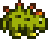
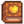
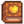

Dinosaur
| Dinosaur | |
|  | |
| Information | |
| Building | |
| Purchase Price | N/A |
| Produce | |
The Dinosaur is a farm animal that lives in a Big Coop. Dinosaurs can be hatched by placing a Dinosaur Egg into an Incubator, taking  18,000m (11d 6h 40m) to incubate, or
18,000m (11d 6h 40m) to incubate, or  9,000m (5d 16h 40m) with the Coopmaster Profession.
9,000m (5d 16h 40m) with the Coopmaster Profession.
Produce
- Main article: Animals#Produce
Dinosaurs are born mature. A mature and fed dinosaur produces a Dinosaur Egg every 7 days, which can be placed in an Incubator to hatch another dinosaur, or sold for  350g. If you have used the  Treasure Appraisal Guide the egg instead sells for
350g. If you have used the  Treasure Appraisal Guide the egg instead sells for  1,050g.
1,050g.
A Dinosaur Egg can be placed in a Mayonnaise Machine to produce Dinosaur Mayonnaise, which sells for  800g.
800g.
| Image | Name | Description | Sell Price | ||||||||
|---|---|---|---|---|---|---|---|---|---|---|---|
| Dinosaur Egg | A giant dino egg... The entire shell is still intact! |
|
Selling
It is possible to sell the Dinosaur. A Dinosaur with more hearts sells for more gold. A Dinosaur with maximum hearts sells for  1,300g. A dinosaur with no hearts sells for
1,300g. A dinosaur with no hearts sells for  315g.
315g.
Note that a dinosaur with 0 hearts of friendship technically sells for  300g, but the player cannot access the 'sell' menu without petting the dinosaur, which gives 15 friendship points (30 with the Coopmaster profession), and increases the sell price to
300g, but the player cannot access the 'sell' menu without petting the dinosaur, which gives 15 friendship points (30 with the Coopmaster profession), and increases the sell price to  315g (
315g ( 330g with Coopmaster).
330g with Coopmaster).
To sell a coop or barn animal, right-click the animal after petting. The friendship/mood interface appears. Move the cursor over the gold coin button at the right to see how much the animal can be sold for. Click that button and the confirmation that follows to complete the sale.
This page or section contains unmarked spoilers from update 1.6 of Stardew Valley. Players may want to avoid or be cautious toward reading this article/section. |
Trivia
- If you talk to Demetrius after hatching a dinosaur, he will get excited about it. So excited that he can't finish his
 Triple Shot Espresso, which he gives to the farmer instead.
Triple Shot Espresso, which he gives to the farmer instead.
History
- 1.0: Introduced.
- 1.2.26: Fixed bug where they wouldn't produce goods at high happiness.
- 1.4: Fixed bug allowing wallpaper #108 to be placed in an incubator in lieu of a Dinosaur Egg.
- 1.6: A new dialogue interaction was added with Demetrius for hatching a dinosaur. Additionally, a new book of power interaction increases the value of unprocessed dinosaur eggs.
| Animals and Produce | |
|---|---|
| Coop | Chicken (Egg • Large Egg • Brown Egg • Large Brown Egg) • Dinosaur (Dinosaur Egg) • Duck (Duck Egg • Duck Feather) • Golden Chicken (Golden Egg) • Rabbit (Wool • Rabbit's Foot) • Void Chicken (Void Egg) |
| Barn | Cow (Milk • Large Milk) • Goat (Goat Milk • Large Goat Milk) • Sheep (Wool) • Ostrich (Ostrich Egg) • Pig (Truffle) |
| Fish Pond | Fish (Roe) |
| Slime Hutch | Slimes (Slime • Slime Ball • Slime Egg) |
| Other | Cat • Dog • Horse • Turtle |